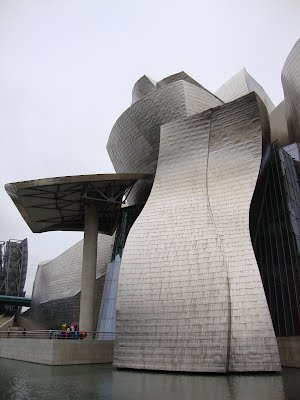

3rd International Workshop on Quantum Entanglement and its Detection (QED3)
Bilbao, Spain
3-7 September, 2012
Organizers:
G. Tóth (Bilbao) and O. Gühne (Siegen)
Local organizers:
G. Tóth and I.L. Egusquiza

Invited speakers:
D. Gross (Freiburg)
P. Horodecki (Gdansk)
M. W. Mitchell (ICFO)
A. Osterloh (Universität Duisburg-Essen)
C. Schwemmer (MPQ and LMU, München)
J. Siewert (U. of the Basque Country, Bilbao)
E. Solano (U. of the Basque Country, Bilbao)
M. Navascues (Bristol)
- Quantum entanglement
- Entanglement witnesses
- Efficient tomographic protocols
- Quantum Metrology
- Experiments